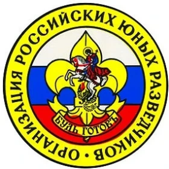
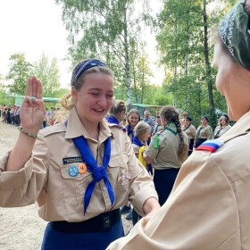
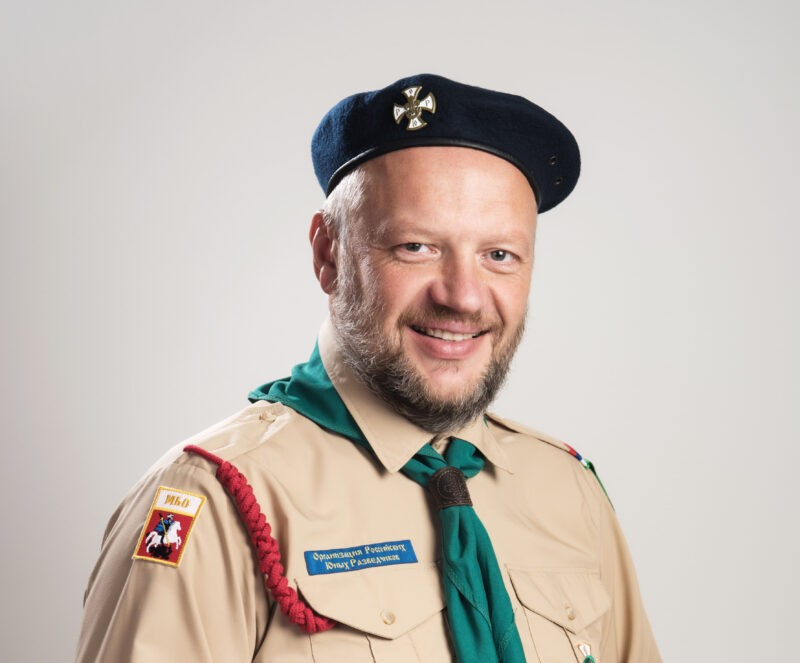

Цели и история
Организация российских юных разведчиков (ОРЮР) – российская неполитическая общественная скаутская организация, первоначально созданная в 1945 году за пределами СССР. Ставит своей уставной целью общественное воспитание российских детей и молодежи в национальном и религиозном духе, дополняющее воспитательную деятельность семьи и школы, основывающаяся на христианском миропонимании и приверженности к историческим ценностям русской культуры и государственности.
Впервые термин «скаут» использовал Роберт Баден-Пауэлл в своей книге «Scouting for boys» (Разведка для мальчиков), которая была выпущена в 1908 году. В следующем году эта книга попала в руки Российского императора Николая II. Он проникся идеей работы с подростками и поручил создать в Санкт-Петербурге отряд мальчиков. 30 апреля 1909 года в Павловском парке был проведён первый костёр (сбор) российских скаутов, организованный гвардейским офицером Олегом Ивановичем Пантюховым. А в 1915 году доктором Аноховым был создан первый отряд девочек. Сам императорский сын, цесаревич Алексей, тоже был скаутом.
Скаутское движение разрасталось по России, и к 1917 году по России насчитывалось около 50 тыс. скаутов. Но с приходом большевиков Организация российских скаутов была запрещена в советской России, и более 1000 ее руководителей и старших разведчиков были арестованы и репрессированы за верность Богу. Благодаря тому, что некоторым руководителям и ребятам удалось спастись за границей, разведческий дух, традиции и методики сохранились, и работа российских скаутов беспрерывно продолжалась в среде русской эмиграции. В 30-х годах во многих странах скаутинг процветал, и там насчитывалось несколько тысяч скаутов.
После второй мировой войны, Организация, потерявшая связь с О. И. Пантюховым, возобновила свою работу под именем ОРЮР. Отделы ОРЮР активно функционировали в Западной Европе, Австралии, Южной и Северной Америке. В 1990 году скаутам-разведчикам разрешили вернуться в Россию, и в Черноголовке прошёл первый после возвращения на Родину костёр. С того момента Организация продолжает свою деятельность: устраивает лагеря, походы, курсы для руководителей (КДР), курсы начальников единиц (КНЕ), курсы для вожаков (КДВ). В настоящее время членами ОРЮР являются всего ~1700 человек.

Методика воспитания
Основой Организации является звеновая работа. Звено – это группа из 5-8 подростков, мальчиков или девочек, имеющая своё название (чаще всего названием звена является животное или растение), девиз, клич, флажок. В звене ребята учатся командной работе, вожак (лидер звена) учится управлять, а остальные ребята – послушанию. В звене нет людей не при деле, так как у каждого члена есть своя должность. Например, повар или медик. На каждый звеновой сбор, которые проходят раз в неделю-две, ребята готовят доклад-рассказ в интерактивной форме по своей должности, и рассказывают его остальным ребятам.
Каждый разведчик, вне зависимости от своего возраста, должности, звания, должен знать законы разведчиков. Всего их двенадцать, и, наряду с заповедями из Евангелия, они составляют основные правила жизни скаута. Также у разведчика должно быть стремление к совершению добрых дел. В память об этом на кончиках разведческого галстука (коричневого у детей (7-11 лет), жёлтого у разведчиков и синего у разведчиц (11-18 лет), зелёного у руководителей (взрослых)) повязываются узелки.
Отдельно можно поговорить о званиях. Самое начальное звание (дети до 7 лет) – медвежонок (мальчики) и зайчонок (девочки). Оно даётся чисто символически, так как в этом возрасте дети ещё не всё понимают. Следующее звание – это волчонок (мальчики) и белочка (девочки). Это уже более серьёзное звание, ведь с момента его получения ребёнок становится частью стаи. Волчата и белочки имеют свою систему подзваний: нежнолапка, одноглазка, двуглазка, таёжка (таёжный волчонок/белочка). По достижении 11 лет ребёнок переводится в отряд, присоединяется к звену и становится новичком, т. е. без звания.
Ему предстоит подготовка сдача на 3 разряд, которая проходит в форме бега по станциям. По окончании бега при успешной сдаче большинства тем проходит торжественное посвящение в разведчики, где новоиспечённый разведчик даёт Торжественное Обещание. После года или более пребывания с 3 разрядом, разведчик(-ца) имеет право сдать на 2 разряд, а затем на 1 разряд. Сдавать на 2 и 1 разряд можно в любое время (при наличии разрешения на то) и кому угодно, кто уже имеет 2 и 1 разряды соответственно. Старшим разведчиком может стать скаут, достигший шестнадцатилетнего возраста, его ставят в пример остальным разведчикам, и на его галстук пришивается чёрная лента. После сдачи на 2 разряд разведчик может получить лесное имя («кличка», прозвище, чаще всего животное или растение, при наличии заслуг может быть вместе с прилагательным, например, смелый Волк), которое обозначается прожжёной дыркой на галстуке. При достижении совершеннолетия разведчик становится витязем (м.) или дружинницей (ж.) или в обход этих званий сразу становится руководителем, а если точнее штаб-инструктором. После этого звания идёт нструктор, затем скаут-инструктор, и наконец скаутмастер.
Присоединение

Чтобы вступить в ряды скаутов в Москве необходимо обратиться к Александру Усанкину по телефону +7 (903) 625-64-45.
Для других регионов контакты находятся на официальном сайте